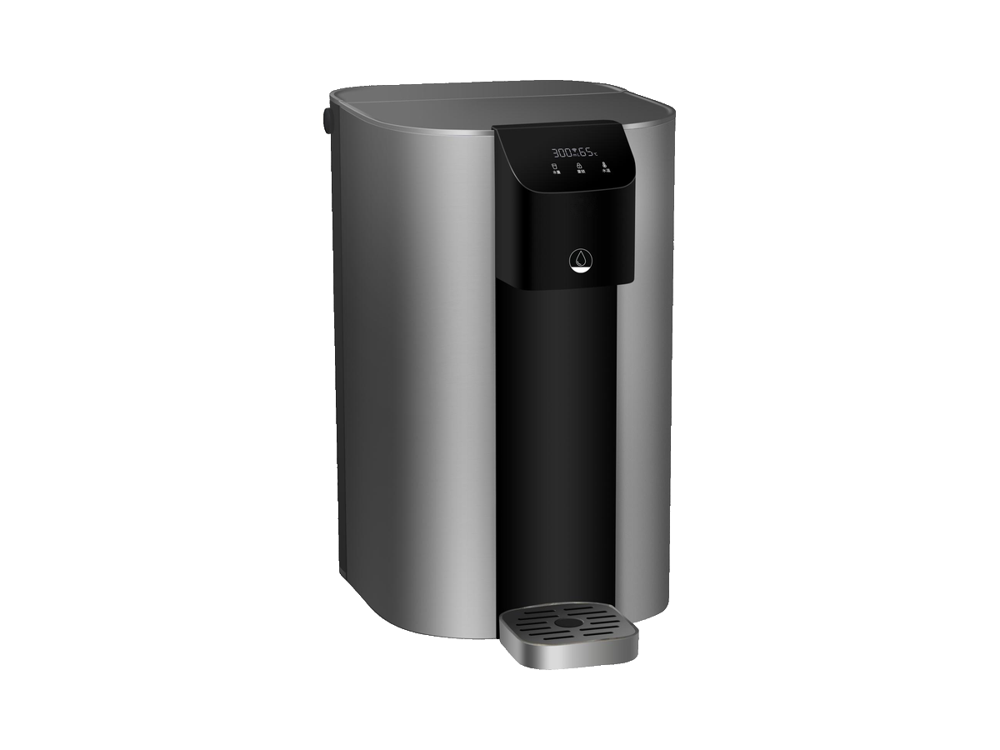

บนเคาน์เตอร์
บนเคาน์เตอร์RP-C08
เครื่องกรองน้ำบนเคาน์เตอร์แบบไส้กรองออลอินวัน
SKU: RP-C08
MOQ: ยืนยันเมื่อสอบถาม
หน้าแรก/ผลิตภัณฑ์/ระบบบนเคาน์เตอร์/ RP-C07

ระบบบนเคาน์เตอร์
เครื่องกรองน้ำ RO พร้อมเหยือกต้มน้ำ (M2101RN)
RP-C07 — เครื่องกรองน้ำ RO พร้อมเหยือกทำความร้อน ข้อมูลจำเพาะหลัก: ความจุ RO 75 / 100 GPD ข้อมูลจำเพาะยืนยันตามรุ่นและคำสั่งซื้อ.
แรงดันไฟฟ้า / ความถี่สามารถปรับตั้งได้ตามประเทศเป้าหมาย การตั้งค่าอื่น ๆ จะยืนยันตามคำสั่งซื้อ.
RP-C07 เป็นเครื่องกรองน้ำ RO ตั้งโต๊ะพร้อมเหยือกทำความร้อน เครื่องเดียวจึงจ่ายน้ำบริสุทธิ์และน้ำร้อน มีสองรุ่น: รุ่นพร้อมเหยือกทำความร้อน และรุ่นน้ำร้อนบริสุทธิ์พร้อมระบบทำความร้อนแบบฟิล์มหนา ถังน้ำดิบจุ 3.2 L รุ่นเหยือกทำความร้อนทำงานที่ 75 / 100 GPD และรุ่นน้ำร้อนบริสุทธิ์ที่ 75 GPD พร้อมการกรอง PPC + RO + โพสต์คาร์บอน ออกแบบสำหรับเจ้าของแบรนด์ที่ต้องการรุ่นตั้งโต๊ะขนาดกะทัดรัดสำหรับน้ำดื่มร้อน.
ปริมาณสั่งซื้อขั้นต่ำคือเท่าใด?
คำสั่งซื้อครั้งแรกคือ 200 ชิ้น ต่อรุ่น และการสั่งซื้อซ้ำคือ 500 ชิ้น.
สามารถสั่งซื้อตัวอย่างก่อนสั่งซื้อจำนวนมากได้หรือไม่?
ใช่ ตัวอย่างพร้อมภายใน 15 วัน และจะคืนค่าตัวอย่างเมื่อสั่งซื้อจำนวนมากครั้งแรก คำสั่งซื้อจำนวนมากใช้เวลา 40 วันหลังอนุมัติตัวอย่าง และจัดส่ง FOB Shenzhen.
ควรเลือกรุ่นย่อยแบบใด?
เสนอราคาเป็น RP-C07 และระบุรุ่นย่อย: พร้อมเหยือกต้มน้ำหรือน้ำร้อนล้วน ทั้งสองรุ่นใช้ถังน้ำดิบ 3.2 L ร่วมกัน.
สองรุ่นย่อย — เสนอราคาเป็น RP-C07 และระบุรุ่นย่อย (พร้อมเหยือกต้มน้ำหรือรุ่นย่อยน้ำร้อนล้วน).
เลื่อนเมาส์เหนือภาพรุ่นย่อยเพื่อดูข้อกำหนด บนหน้าจอสัมผัส ให้แตะที่ภาพ.

ข้อกำหนดทั้งหมดของแต่ละรุ่นย่อย เปรียบเทียบเคียงกัน ตารางข้อกำหนดด้านล่างแสดงค่าของ RP-C07.
| ข้อกำหนด | RP-C07-1 — พร้อมเหยือกทำความร้อน (M2101RN) | RP-C07-2 — รุ่นน้ำร้อนบริสุทธิ์ (X801) |
|---|---|---|
| กำลังการผลิต RO | 75 / 100 GPD | 75 GPD |
| ขนาด (ยาว×กว้าง×สูง) | 360 × 175 × 320 mm / 405 × 172 × 311.5 mm; ตามรูปแบบถังเก็บน้ำ | 295 × 212 × 347 mm |
| ถังน้ำดิบ | 3.2 L | 3.2 L |
| ถังน้ำบริสุทธิ์ | ไม่มี / 0.8 L | เหยือก 1.0 L |
| การกรอง | PPC + RO + โพสต์คาร์บอน | ตลับกรอง RO แบบหกในหนึ่งเดียว 1 ตลับ |
| เทคโนโลยีทำความร้อน | ยืนยันตามคำสั่งซื้อ | การทำความร้อนแบบฟิล์มหนา |
| อัตราส่วนน้ำบริสุทธิ์ต่อน้ำทิ้ง | ยืนยันตามคำสั่งซื้อ | 3:1 |
| แรงดันไฟฟ้า / ความถี่ | ปรับตามประเทศปลายทางได้ | ปรับตามประเทศปลายทางได้ |
8 แถวข้อมูลจำเพาะจากแคตตาล็อก ROPureOEM.
| กำลังการผลิต RO | 75 / 100 GPD |
|---|---|
| ขนาด (ยาว×กว้าง×สูง) | 360 × 175 × 320 mm / 405 × 172 × 311.5 mm; ตามรูปแบบถังเก็บน้ำ |
| ถังน้ำดิบ | 3.2 L |
| ถังน้ำบริสุทธิ์ | ไม่มี / 0.8 L |
| การกรอง | PPC + RO + โพสต์คาร์บอน |
| กำลังไฟฟ้าทำความร้อน | ยืนยันตามคำสั่งซื้อ |
| แรงดันไฟฟ้า / ความถี่ | ปรับตามประเทศปลายทางได้ |
| การตั้งค่าอื่น ๆ | ยืนยันตามคำสั่งซื้อ |
ข้อมูลจำเพาะนำมาจากแคตตาล็อก ROPureOEM หากค่ายังไม่ได้รับการยืนยัน จะระบุว่า “ยืนยันตามคำสั่งซื้อ” — เราไม่เผยแพร่ตัวเลขที่ยังไม่ได้รับการยืนยัน.
บนเคาน์เตอร์เครื่องกรองน้ำบนเคาน์เตอร์แบบไส้กรองออลอินวัน
SKU: RP-C08
MOQ: ยืนยันเมื่อสอบถาม
 บนเคาน์เตอร์
บนเคาน์เตอร์เครื่องกรองน้ำ RO พร้อมน้ำแข็ง น้ำร้อน และน้ำเย็น
SKU: RP-C09
MOQ: ยืนยันเมื่อสอบถาม
 บนเคาน์เตอร์
บนเคาน์เตอร์เครื่องกรองน้ำ RO บนเคาน์เตอร์พร้อมระบบทำความเย็นแบบคอมเพรสเซอร์
SKU: RP-C10
MOQ: ยืนยันเมื่อสอบถาม
 บนเคาน์เตอร์
บนเคาน์เตอร์เครื่องกรองน้ำ RO พร้อมกาแฟบดสด
SKU: RP-C11
MOQ: ยืนยันเมื่อสอบถาม